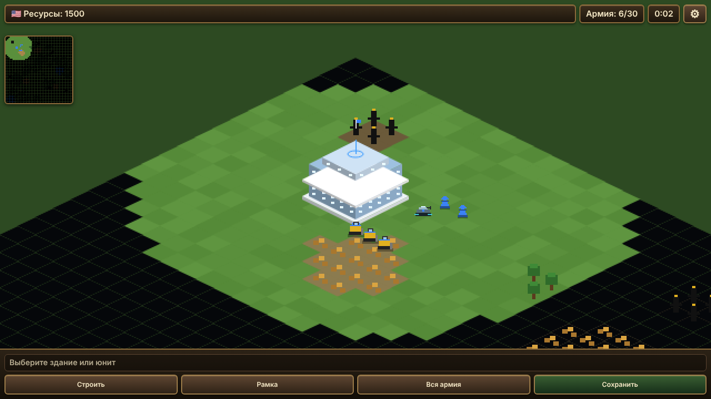

01Обычная игра
Быстрый бой с готовыми настройками: одна кнопка — и вы на карте.
Стратегия о современных конфликтах. Стройте базы, собирайте армию и ведите бои на карте в изометрической проекции. Можно сыграть быстрый бой, собрать матч по своим настройкам или пройти кампании за шесть стран.
Установка добавляет значок на экран. Игра открывается без интернета после первого запуска. На iPhone: «Поделиться» → «На экран «Домой»».

Начните с обычного боя или настройте матч под себя.
Быстрый бой с готовыми настройками: одна кнопка — и вы на карте.
Карта, размер, число игроков, фракции и команды, стартовые ресурсы и ресурсы на карте. Тап по точке расстановки меняет команду.
Миссии с текстом и заданиями. Каждая кампания рассказывает о своей стране и своём конфликте.
Возводите здания, стройте бульдозеры, грузовики, солдат и танки. Следите за лимитом армии и ресурсами в верхней панели.
Выделяйте здания и юниты рамкой или выбирайте всю армию одной кнопкой.
Миникарта показывает всю карту, а меню паузы в шестерёнке позволяет продолжить, сохранить игру или вернуться на главную.
Сохранение хранится в вашем браузере. Загрузить его можно из главного меню на том же устройстве.